*Equal contribution (first authors). †Corresponding author: soumiks@iastate.edu
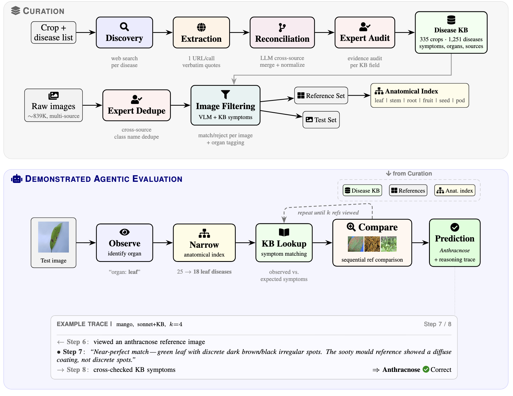
Curation (top): a source-cited disease KB (335 crops, 1,251 diseases) and an image corpus (~839K images) are assembled in parallel; expert audit and dedupe gate both tracks before image filtering tags every image with its anatomical context. Agentic evaluation (bottom): a VLM agent observes the affected organ, narrows candidates via the anatomical index, consults KB symptoms, and sequentially compares reference images in an open-ended loop bounded by reference budget k — producing a prediction with a step-by-step reasoning trace.
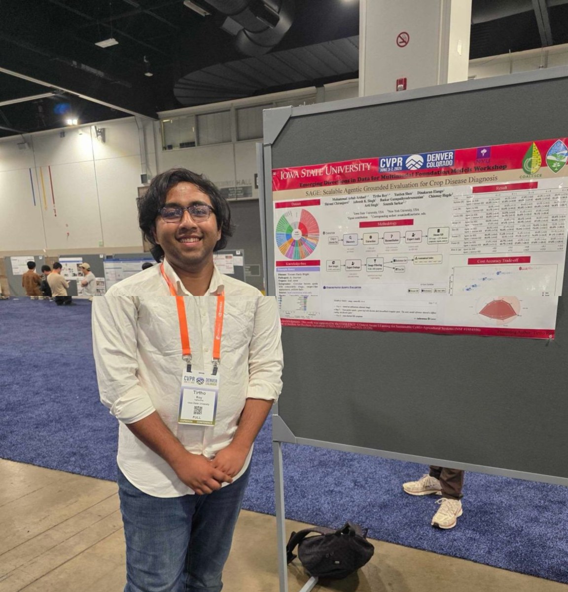
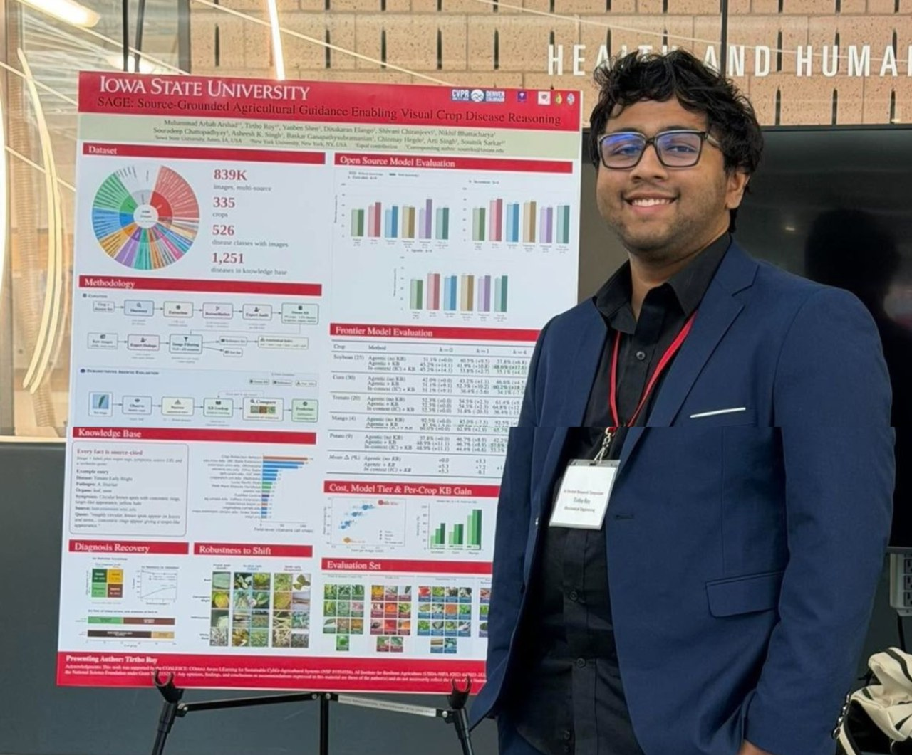
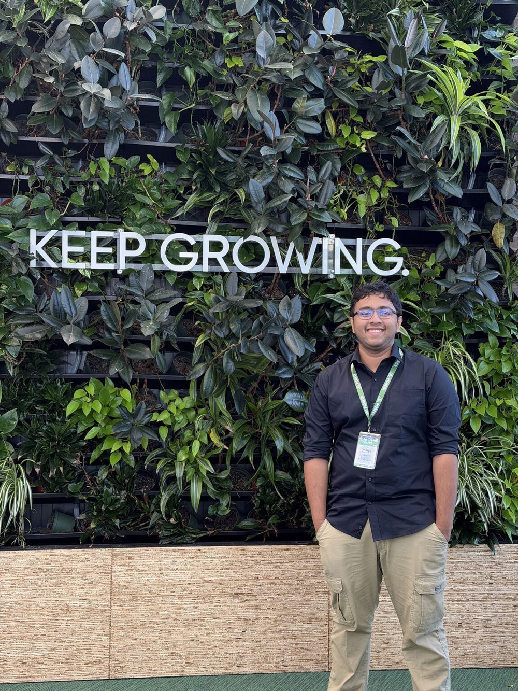
Accurate diagnosis of plant diseases is vital for food security worldwide. Since large-scale curated datasets for plant pathologies are scarce, training disease detection models that generalize across crops and field conditions remains hard. We compile the largest plant disease image dataset to date (~839K images, 335 crops, 1,251 disease classes), built for training-free prediction by visual agents. A scalable automated pipeline produces source-grounded symptom descriptions in which every fact ties to a verbatim web quote. Domain experts sanity-check sampled crops and reconcile disease-name variants across sources. As a baseline, we demonstrate an autonomous reasoning agent that identifies the anatomical context, narrows candidates using symptom knowledge, and sequentially compares reference images, producing a full, explainable reasoning trace. Adding symptom knowledge improves accuracy by 16.2 percentage points on average at full reference budget, with consistent gains across all four evaluation crops. We anticipate that the agentic baselines that we establish will benefit directly from future improvements in foundation model capabilities without retraining.
Spanning 335 crops and 1,251 disease classes (~839K images), assembled from established benchmarks, expert-curated collections, and community sources, with multi-organ coverage (leaf, stem, root, seed, ear, head).
That, given a crop name, automatically produces structured symptom knowledge with per-field provenance: every fact traces back to a specific web source with a verbatim supporting quote.
In which each prediction is made by an autonomous reasoning agent that produces an explainable, human-readable reasoning trace showing which references were examined and why.
Across four crops of varying difficulty (Soybean, Corn, Tomato, Mango), multiple reference budgets (k = 0, 1, 4, 8), KB sources, and model tiers (Haiku, Sonnet, Opus).
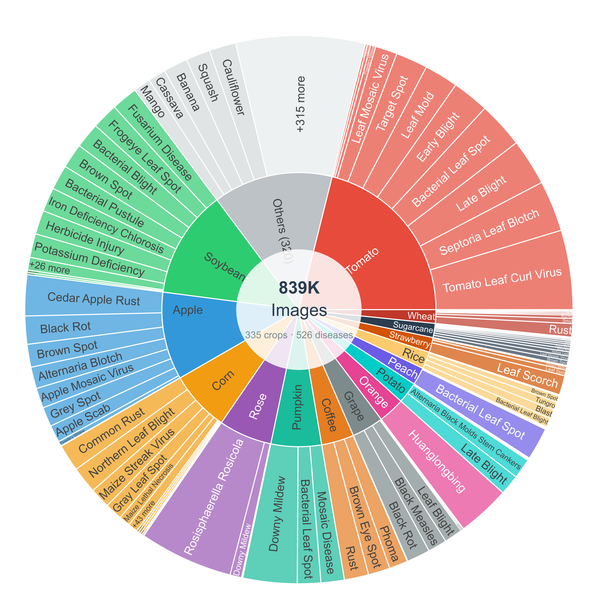
Distribution of ~839K images across 335 crops and 1,251 disease classes. Each disease is paired with structured, source-cited symptom knowledge: organ tags, symptom descriptions, source URLs, and verbatim supporting quotes — not just an image and a label.
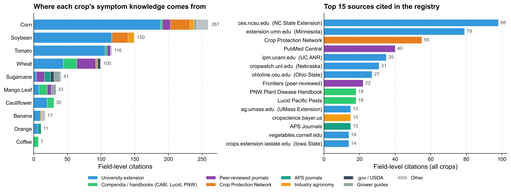
Sources backing the disease registry across 10 released crops. Left: per-crop field-level citations stacked by source category. Right: top 15 cited domains. The pipeline draws predominantly from US land-grant extension publications, complemented by international compendia (CABI, Lucid Pacific Pests, PNW Plant Disease Handbook), peer-reviewed journals, and the multi-university Crop Protection Network.
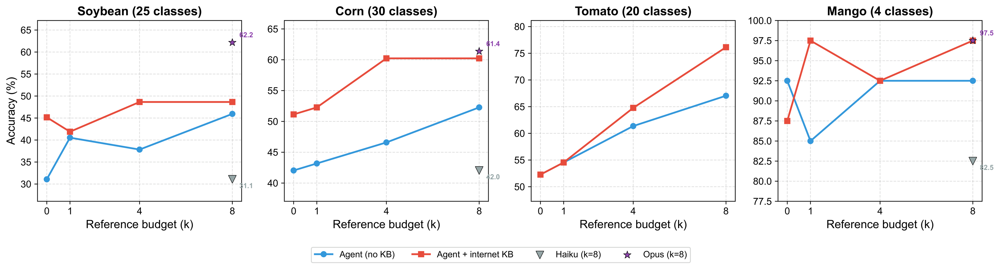
Diagnostic accuracy as a function of reference budget k across four crops of varying difficulty: Soybean (25 classes), Corn (30 classes), Tomato (20 classes), and Mango (4 classes). Each panel shows the agent without KB (blue) and with internet KB (red). Adding the KB consistently lifts accuracy, with the largest gains at low k — symptom descriptions and the anatomical index guide the agent to the most relevant references first.
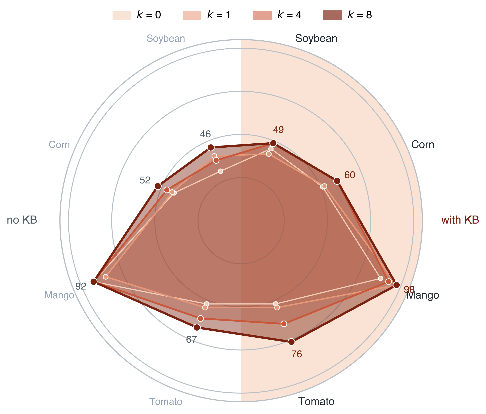
Per-crop accuracy across reference budgets. The right semicircle shows accuracy with internet KB; the left shows the matched no-KB condition. Concentric polygons (light to dark) correspond to k = 0, 1, 4, 8. Right-side bulges across Soybean, Corn, and Tomato indicate consistent KB benefit; Mango is saturated and roughly symmetric.
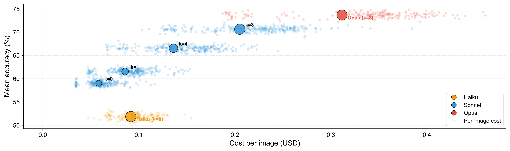
Cost-accuracy tradeoff (mean accuracy across all four crops, internet KB). Small dots show individual per-image API costs; large bubbles show aggregate means with bubble size proportional to reference budget k. Increasing k improves accuracy at growing cost with diminishing returns past k=8. Model quality is the single most impactful factor: the system gets better automatically as foundation models improve, with no retraining.
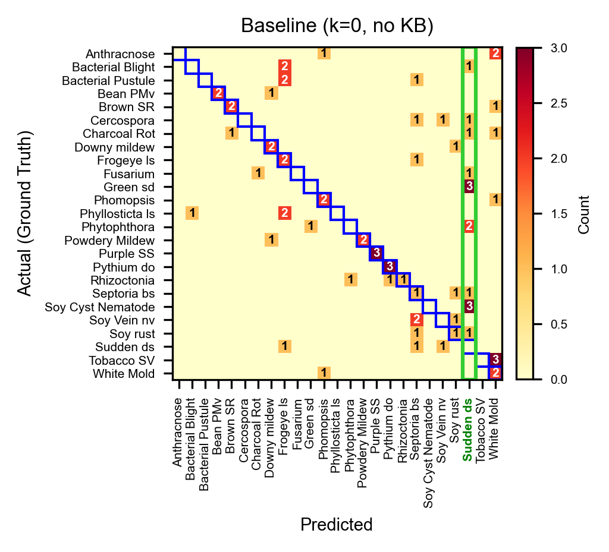
Baseline (Sonnet, k=0, no KB): 31.1%. Sudden-death-syndrome is heavily over-predicted (14 false positives), absorbing predictions from many other classes.
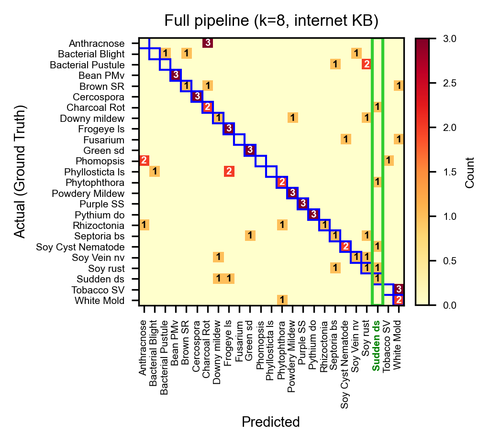
Full pipeline (Sonnet, k=8, internet KB): 48.6%. The over-predicted column is markedly reduced as the agent uses KB symptoms and reference comparisons to distinguish visually similar diseases.
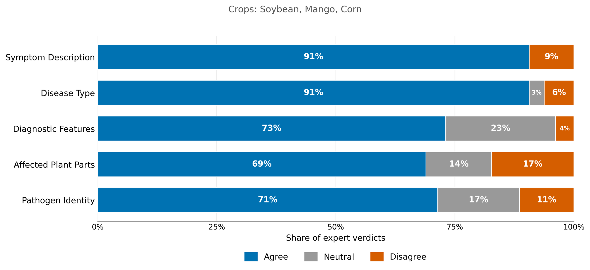
Expert agronomist verdicts on KB-sourced claims across soybean, mango, and corn. Every field carries per-field provenance — the extracted value, a source URL, and a verbatim supporting quote. Agreement ranges from 69% to 91%, with disagreement at or below 17%.
@inproceedings{arshad2026sage,
title = {SAGE: Scalable Agentic Grounded Evaluation for Crop Disease Diagnosis},
author = {Arshad, Muhammad Arbab and Roy, Tirtho and Shen, Yanben and Elango, Dinakaran and Chiranjeevi, Shivani and Singh, Asheesh K. and Ganapathysubramanian, Baskar and Hegde, Chinmay and Singh, Arti and Sarkar, Soumik},
booktitle = {CVPR 2026 Workshop on Emerging Directions in Data for Multimodal Foundation Models},
year = {2026},
url = {https://arxiv.org/abs/2605.09768}
}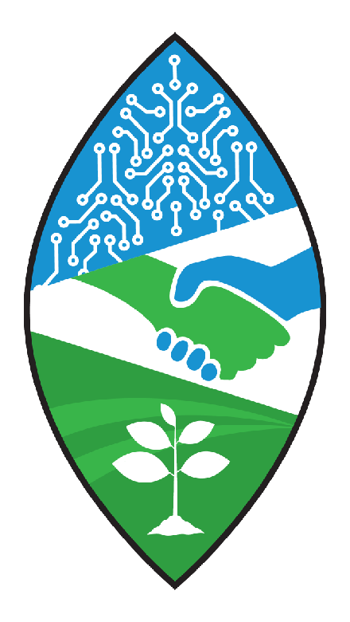
This work was supported by the COALESCE: COntext Aware LEarning for Sustainable CybEr-Agricultural Systems (NSF #1954556), AI Institute for Resilient Agriculture (USDA-NIFA #2021-647021-35329).